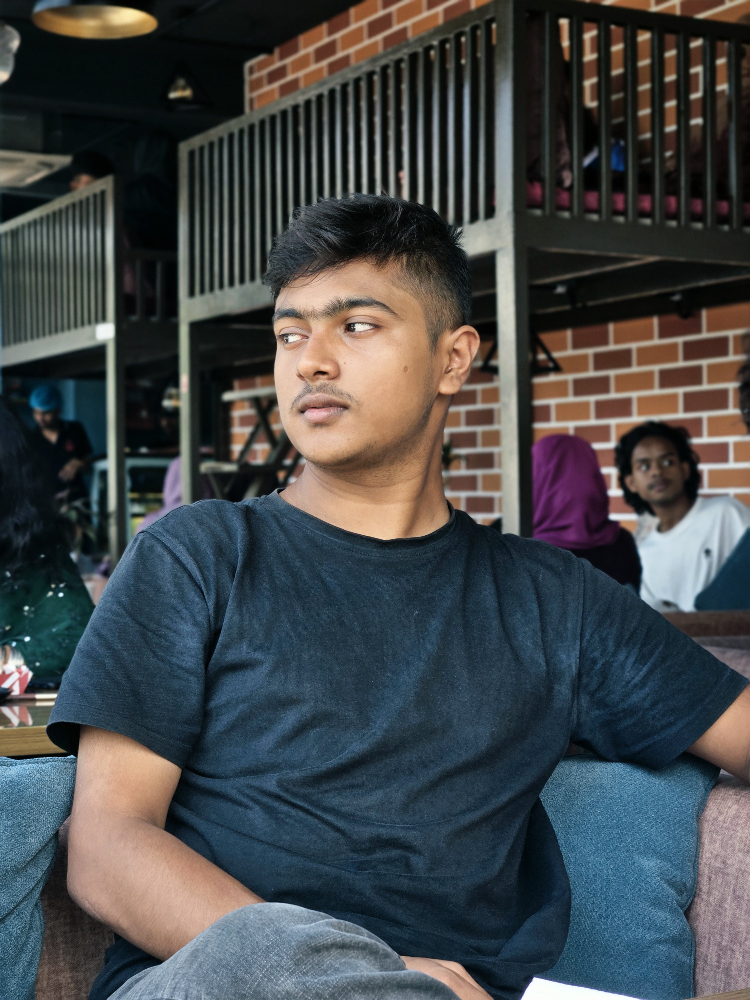
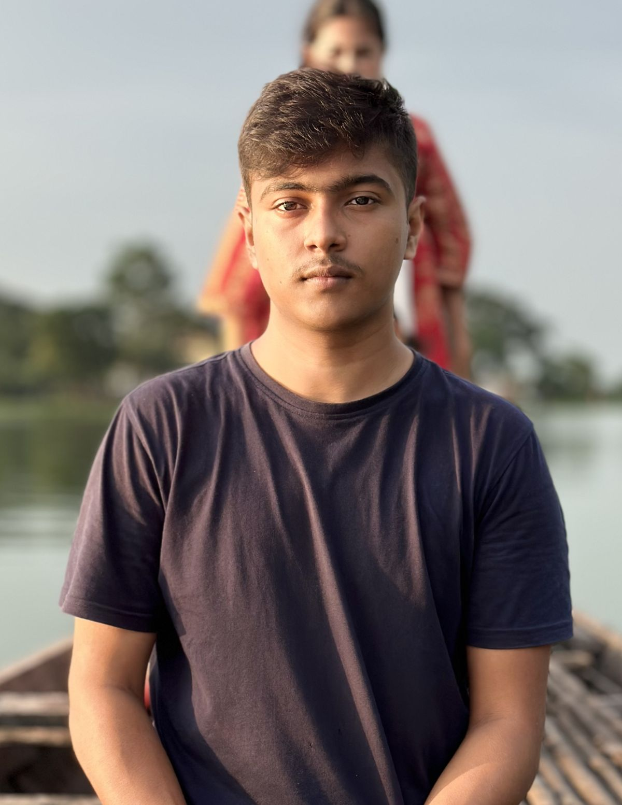

Technology
Smartphones, gadgets, emerging technologies, and the products shaping everyday life.
My background, interests, and what I'm working towards.

I'm Meheran Tahasin, a Bangladeshi student currently studying at KC College, Jhenaidah.
I'm naturally curious about how technology works and how it shapes the world around us. My interests include smartphones, computing, software, and the broader field of computer science.
I believe in learning continuously, exploring new ideas, and building a future around the things that genuinely interest me.
KC College · Jhenaidah, Bangladesh
Currently pursuing my higher secondary education. I previously completed my Secondary School Certificate examination with a GPA of 5.00.
Smartphones, gadgets, emerging technologies, and the products shaping everyday life.
Computing, software, programming, and understanding how digital systems work.
Stories, characters, world-building, and cinema from different cultures.
Books, ideas, and writing that offer different perspectives on life.

I'm still figuring things out, discovering new interests, and working towards the future I want to build.
Have something interesting to discuss?
Get in Touch